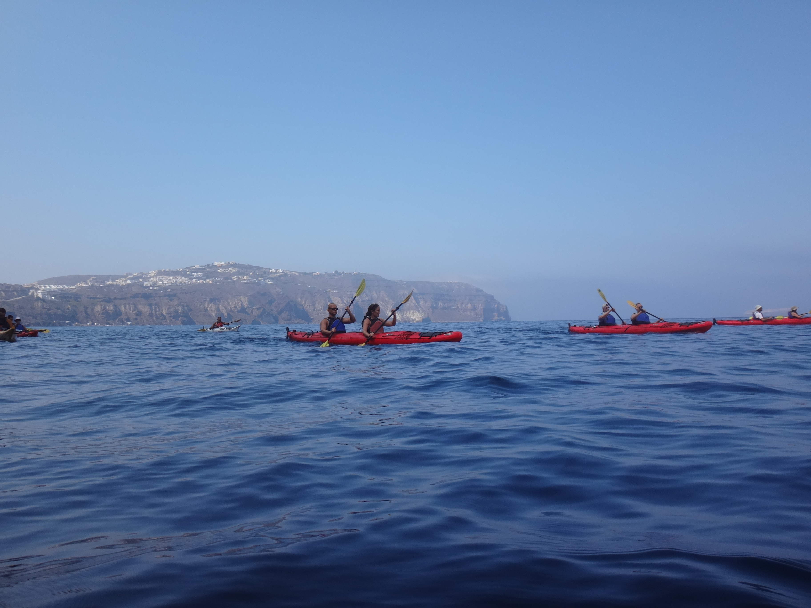

In August 2015, I was able to take a trip to Santorini which has been my favorite travel destination. We stayed for 10 days, traveling around the small island after first stopping in Athens for a day. We were able to stay near the beach, near the cliffside, and finally in the largest city, Fira.
Sailing
One evening, we embarked on a sunset sail where we enjoed food, drinks, snorkeling, swimming, and a beautiful view of the sunset. We stopped at the "hot springs" for swimming (which was really just slightly warmer water). We met a lot of fun people on the sail and went out for drinks afterwards with the newly appointed captain.

Winery
Santorini has many wineries to chose from, but we chose to visit one of the larger wineries:Santo. There was an amazing view of the volcano and we chose a wine tasting that include a "sampling" of twelve(!) different wines for only 20 €. Afterwards, we took a tour of the winery and vinyards.

Hiking
We were able to go hiking several times during our trip to Santorini. We first hiked up to the ancient city of Thira only accessible on foot which was a 3 hour hike. Later in the trip while we stayed in a secluded part of the island we walked to the closest restaraunt...45 minutes away. On the way we saw some beautiful views and iconic blue-domed churches and even a wedding!

Kayaking
One of the days that we were in Santorini we went on an organized kayaking trip with a group of people. The best part of the trip was stopping at a secluded beach only accessible by boat and finding a small chapel in the side of the cliff where we ate a delicious lunch. The trip was also very informative as the guides discussed how terrible pollution/litter is on some of the greek islands and how it affects wildlife.


Beach
Because of Santorini's volcano, the beaches in Santorini are mostly black Sand beaches. While the beaches are not neccessarily what Santorini is known for, we had a nice time realaxing in the sun and going swimming.